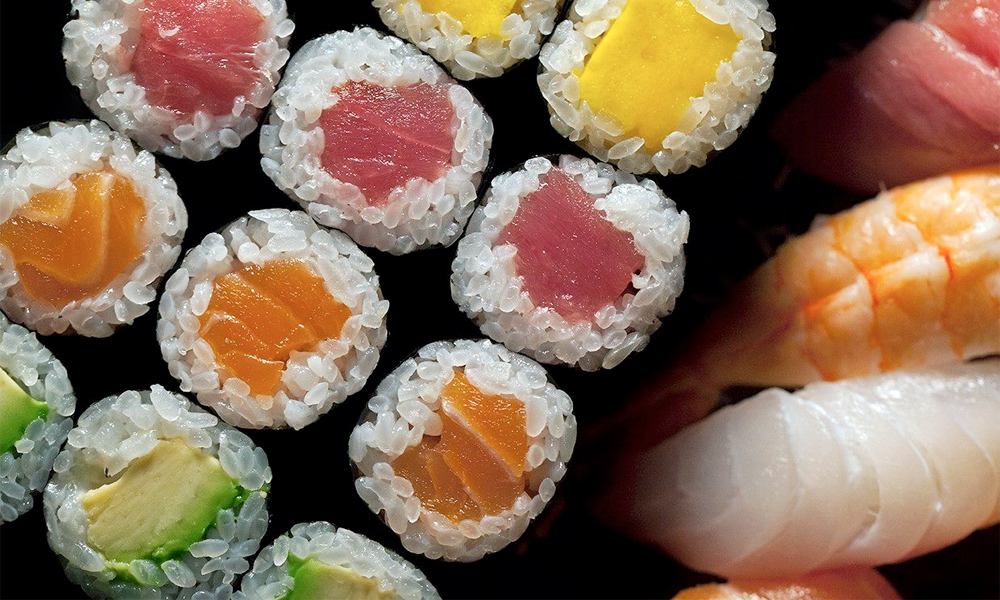

El sushi, consiste en una base de arroz con pescado o marisco crudo o semi-cocinado y otros ingredientes tales como verduras y huevo. Existen diferentes tipos de sushi, los denominados makisushi se encuentran envueltos en alga nori. El sushi se acompaña de salsa de soja, wasabi y jengibre marinado. Los orígenes de esta especialidad se pierden (como sucede a menudo) en el tiempo, donde se entrelazan historias y leyendas. Sin embargo, parece que las primeras formas de proto-sushi se importaron de la vecina China, donde ya en el siglo VI existía la costumbre de combinar el pescado con el arroz. No obstante, el sushi en su forma actual se concibió en realidad en Japón, concretamente en el Tokio del siglo XIX.
